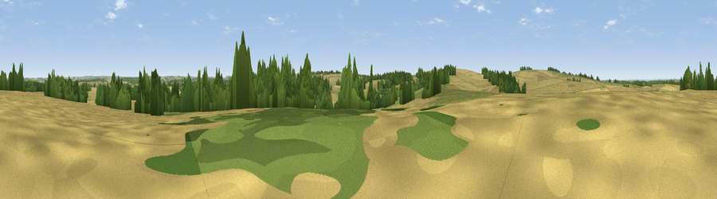

Gander Down
#32169 in England · top 46% of its area beats it · near CheritonThe view, rendered

A 360° render of this exact spot computed from the terrain model, tree cover and land cover — summer colours, afternoon light, calibrated against photographs of famous viewpoints. Real trees, hedges and buildings will differ in detail.
The panorama
Grey silhouette: terrain skyline in each direction (720 bearings, Earth curvature and refraction included). Dashed green: skyline with trees (+15 m) and buildings (+8 m) as obstacles. Blue strip: how far the ground is visible on each bearing.
Where the view opens
Wedge length = distance to the farthest visible ground on that bearing (vegetation-aware). Rings at 10, 25 and 50 km.
What fills the view
57% cropland · 22% grassland · 20% woodland ·
Angular shares of the visible panorama (visual magnitude), not map area. Landscape diversity 0.44 (0–1 Shannon).
Key numbers
More beautiful places nearby
The staircase of upgrades: each row has a higher view potential than everything closer. Driving times are estimates from straight-line distance, calibrated against real road routing — check an actual route before setting out.
| Place | Direction | Drive | Score |
|---|---|---|---|
| Viewpoint near Cheriton | SW · 2 km | ~5 min | 58.2 |
| Cheesefoot Head | W · 3 km | ~7 min | 62.0 |
| Viewpoint near Chilcomb | WNW · 4 km | ~9 min | 63.9 |
| Beacon Hill | SE · 6 km | ~13 min | 71.7 |
| Viewpoint near Meonstoke | SE · 10 km | ~20 min | 74.8 |
| Viewpoint near Buriton | ESE · 17 km | ~29 min | 75.3 |
| Viewpoint near Buriton | ESE · 17 km | ~30 min | 80.0 |
| Beacon Hill | ESE · 26 km | ~42 min | 85.8 |
51.04324, -1.19875 · source: osm peak · position refined by local search. Computed location — check access rights before visiting.